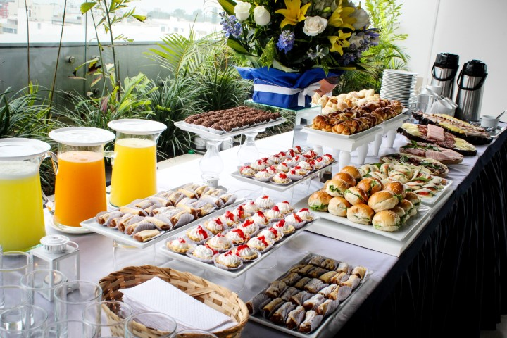

Sobre Nosotros

En CaféCultura, creemos que una taza de café es más que una bebida; es una experiencia que enriquece el alma. Nuestro café de especialidad, cuidadosamente seleccionado, y nuestro ambiente acogedor están diseñados para ofrecerte un refugio donde la cultura y el arte se encuentran.
Fundado por Ashlee Sanabria, CaféCultura es un espacio donde la comunidad puede reunirse, relajarse y disfrutar de momentos únicos. Te invitamos a descubrir un lugar lleno de inspiración y buen gusto.
Eventos
En CaféCultura, siempre hay algo emocionante que hacer. Desde tardes de lectura y exhibiciones de arte local hasta música en vivo y talleres creativos, nuestro calendario de eventos está diseñado para conectar a la comunidad y celebrar la cultura en todas sus formas.
Contacto
¡Nos encantaría saber de ti! Para más información sobre nuestros productos, eventos, o cualquier consulta, no dudes en contactarnos.
Email: info@cafecultura.com
Teléfono: +504 9395-2829
Propietaria: Ashlee Sanabria